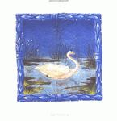

| Artist: | Hostsonaten |
| Title: | Springsong |
| Label: | Sublime I-122001 |
| Length(s): | 45 minutes |
| Year(s) of release: | 2002 |
| Month of review: | [05/2002] |
| 1) | In The Open Fields | 4.57 |
| 2) | Kemper/Springtheme | 5.36 |
| 3) | Living Stone And 1st Reprise | 3.30 |
| 4) | She Sat Writing Letters On The Riverbank | 3.47 |
| 5) | The Underwater And 2nd Reprise | 3.28 |
| 6) | Lowtide | 3.20 |
| 7) | The Wood Is Alive With The Smell Of The Rain | 4.20 |
| 8) | Evocation Of Spring In A Fastdance | 2.40 |
| 9) | Toward The Sea | 13.18 |
Living Stone And 1st Reprise is arther easy-going piece with a bouncy rhythm. Again, the flute and violin take the lead in the melodic side of the music. The latter can be best compared to Phillips and Williamsons Tarka, being quite classical, yet extremely melodic, in outset.
On She Sat Writing Letters On The Riverbank we find a darker Hostsonaten. The slow drip-drop of the piano and later also violin build a sad atmosphere. The somber Italian samples add to this.
However, with The Underwater And 2nd Reprise we come into jazzy waters. Here the piano plays playful runs, the bass is bouncing and the drums are participating nicely with varied drumming. The soprano sax meanders, the moog bleeps, thayt is until the guitar and the mellotron take over for a more typical progressive part. Then the same music comes out vocoded as if over a radio, to gain in clarity again later on. Although the band does not rock out so enthusiastically as does Mostly Autumn, I do see a family resemblance.
After Lowtide, which is piece filled with sound, but without the thematic approach we come to again a folky tune, The Wood Is Alive With The Smell Of The Rain. Although the band plays (British) folk inspired music, they continue to be very careful in their playing, even in their more proggy moments as for instance in this piece when the keyboards reign. The music does have a certain vitality, but the band never really lets go.
The same holds for Evocation Of Spring In A Fastdance, which is a rather fast track, but always lightfooted and lighthearted. This is not necessarily a drawback, mind you. This one has a strong Latin percussive feel with plenty of sax.
Toward The Sea is the long three parted epic of the album. A lot of repetition on the first part with its strumming acoustic guitar, meandering sax and long tones on violin in the back. Compared to the other songs, quite a bit more proggy. As soon as I have written this we glide into a part where the melodic flute reigns again. The pace stays up. At the end of the first part, the music gets to be quite intense. The second part, the 3rd Reprise, is a small interlude between the other two, with a long guitar solo and mellotron. The folk returns in the whistles on the third part, Springland. The band goes for a more percussive approach then with radiant acoustic guitar and the violin in sad mode. The conclusion of the track features a strong climactic guitar solo supported by the organ.